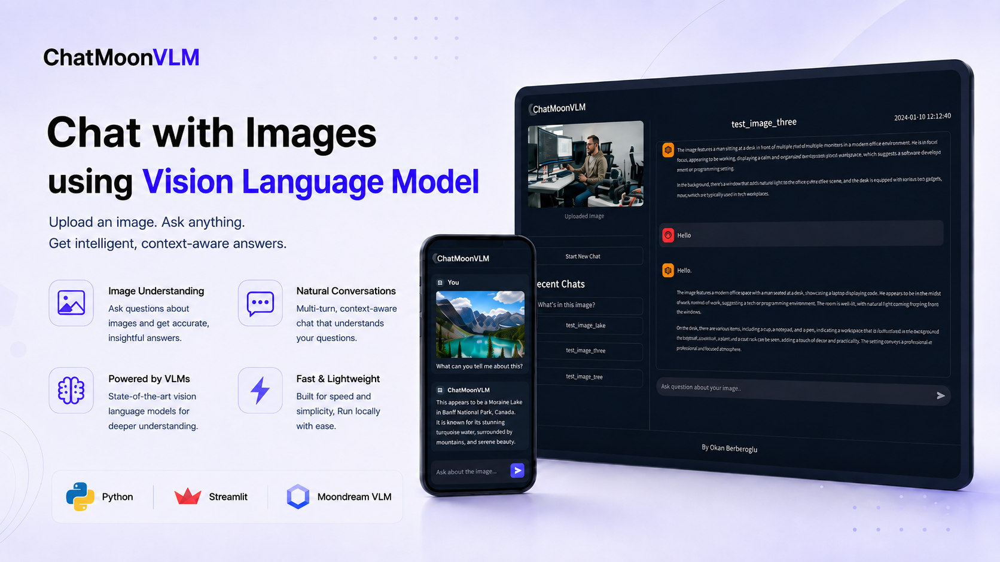

Project Overview
ChatMoonVLM is a web-based Visual Question Answering (VQA) system that turns an uploaded image into an interactive conversation. The user selects an image, starts a chat session, and asks questions about the visual content. The answer is generated by Moondream, a compact open-source vision-language model designed for efficient local inference on consumer-grade hardware.
The project focuses on accessibility, reproducibility, and privacy. Instead of relying on external AI APIs, the model runs inside the local application environment, which makes the system suitable for private images, offline experiments, and resource-constrained use cases. Streamlit provides the user interface, while the application logic is separated into page, service, and model modules.
The implementation also includes persistent chat history and an in-memory image embedding cache. Each session stores the image reference and question-answer history as JSON, while the encoded image representation is reused for follow-up questions. Docker containerization packages the Streamlit server, dependencies, and Moondream model files for consistent deployment.
System Architecture
The application is organized as a modular Streamlit system with a clear separation between the user interface, service logic, and model inference layer. The main entry point initializes session state, controls navigation between the Main Page and Chat Page, and prepares the Moondream model before user interaction begins. A dedicated model installer script retrieves the required model revision during the Docker build process so deployment remains reproducible.
The user uploads an image on the main page. ImageService saves the file and makes it available for both display and model processing.
The Model class converts the image into a visual embedding once and keeps the encoded representation in memory for the active session.
The user writes a natural-language question on the chat page. The question is passed to the model together with the cached image representation.
Moondream performs inference on GPU when available, or falls back to CPU, then returns a natural-language answer to the chat interface.
ChatService stores the image reference and Q&A history in a JSON session file so previous conversations remain accessible after restart.
- MainPage — handles image upload, displays recent chat sessions, and starts a new visual question answering conversation
- ChatPage — renders the uploaded image, previous questions and answers, and the input field for new visual queries
- Session state — keeps track of the active page, selected chat, uploaded image, and loaded model across Streamlit reruns
- ChatService — creates chat sessions, generates chat names, and reads or writes question-answer history as JSON
- ImageService — manages uploaded image files and loads them when they are needed by the interface or the model
- Model (Moondream) — encapsulates VLM loading, GPU/CPU selection, image encoding, cached embeddings, and response generation
- Docker — packages the Streamlit app, dependencies, and model files into a reproducible container exposing port 8501
Key Features
docker run command.